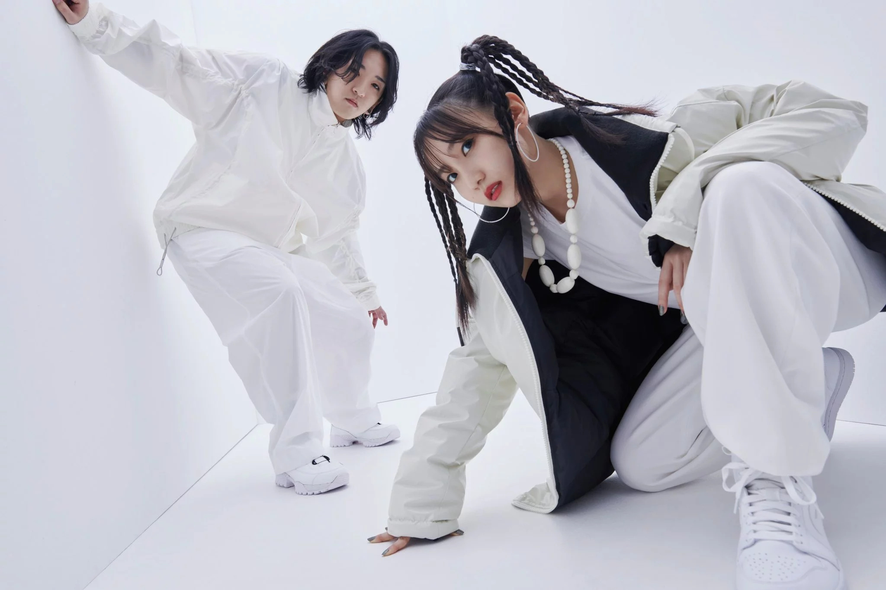
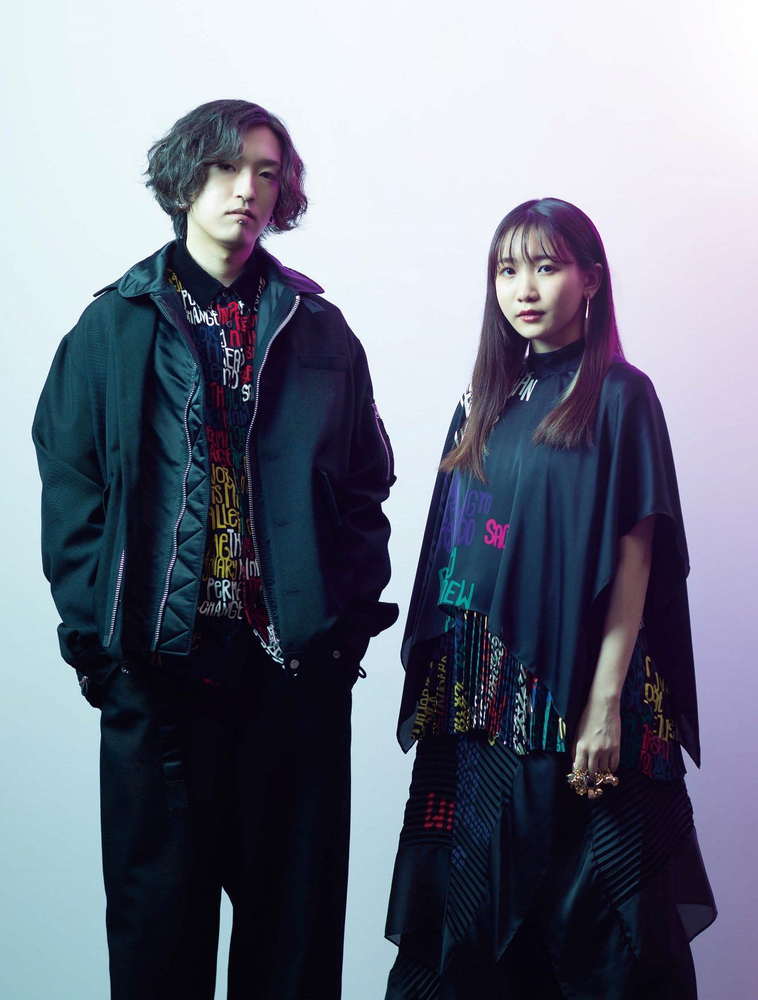

PROFILE

コンポーザーのAyaseとボーカルのikuraによる、ソニーミュージックが運営する小説・イラスト投稿サイト「monogatary.com」から誕生した、“小説を音楽にする”ユニット。従来のバンドやグループとは異なり、「原作となる物語」が存在し、それを楽曲や映像へと昇華させていくという、非常にユニークなコンセプトで結成された。
DISCOGRAPHY
SONGS
NOVELS
オリオン
| MUSIC | : | Ayase |
|---|---|---|
| VOCAL | : | ikura |
| NOVEL | : | E.C.MYERS |
| VIDEO | : | Animation Production : A-1 Pictures / Additional Production : IJIGEN TOKYO |
NEWS
2026.08.31 [MONDAY]
2026.08.23 [SUNDAY]
MEDIA
LIVE

2026.10.24 [SATURDAY]
YOASOBI ASIA 10-CITY DOME &
STADIUM TOUR 2026-2027 “超惑星”
YOASOBI ASIA 10-CITY DOME & STADIUM TOUR 2026-2027 “超惑星”
- 国内公演概要 -
＜大阪公演＞
京セラドーム大阪
2026年10月24日（土） 開場 15:30 開演 18:00
2026年10月25日（日） 開場 14:30 開演 17:00
お問合せ：キョードーインフォメーション 0570-200-888 ( 平日12:00-17:00 ）
＜愛知公演＞
バンテリンドーム ナゴヤ
2026年11月7日（土） 開場 15:30 開演 18:00
2026年11月8日（日） 開場 14:30 開演 17:00
お問合せ：サンデーフォークプロモーション 052-320-9100（12:00～18:00）
＜北海道公演＞
大和ハウス プレミストドーム
2026年11月14日（土） 開場 15:30 開演 18:00
2026年11月15日（日） 開場 14:30 開演 17:00
お問合せ：WESS info@wess.co.jp
＜福岡公演＞
みずほPayPayドーム福岡
2026年11月28日（土） 開場 15:30 開演 18:00
2026年11月29日（日） 開場 14:30 開演 17:00
お問合せ：キョードー西日本 0570-09-2424（平日・土曜 11:00～15:00）
＜東京公演＞
東京ドーム
2026年12月5日（土） 開場 15:30 開演 18:00
2026年12月6日（日） 開場 14:30 開演 17:00
お問合せ：ホットスタッフ・プロモーション 050-5211-6077 (平日12:00〜18:00)
―TICKET―
指定席 14,000円（税込）
ファミリーチケット・大人［着席指定］ 14,000円（税込）
ファミリーチケット・子供［着席指定］ 8,000円（税込）
[販売サイト]https://l-tike.com/concert/mevent/?mid=530064